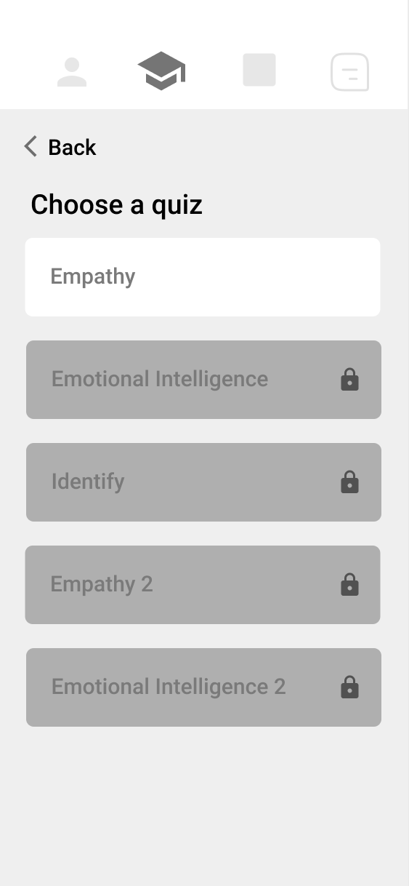

Wireframes
To demonstrate learning about emotions and feelings, I designed a quiz to be as intuitive as possible and easy to navigate for use by kids and youth. For example, the quiz is properly labeled to help the user navigate what to do on each screen and displays one question at a time. The user can then tap a next arrow to view the next question.
